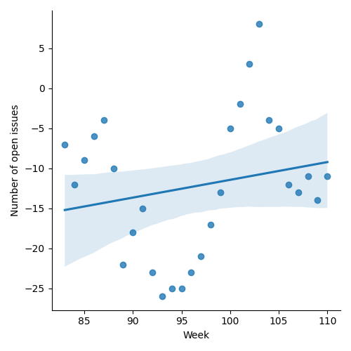
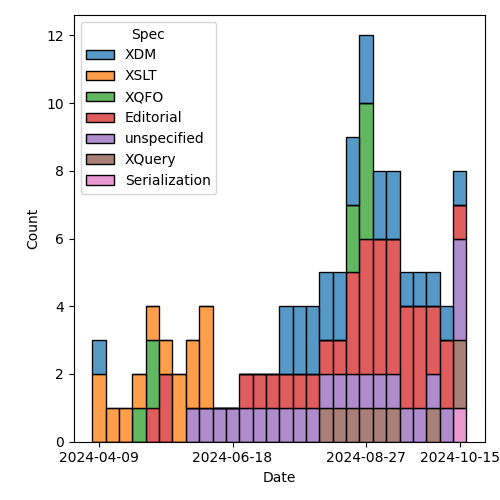
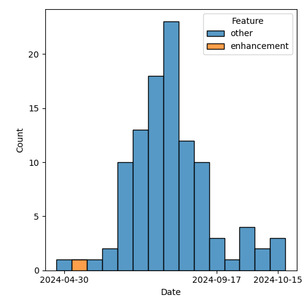

QT4 CG Meeting 095 Minutes 2024-10-22
Meeting index / QT4CG.org / Dashboard / GH Issues / GH Pull Requests
Table of Contents
- Minutes
- Summary of new and continuing actions
[0/8] - 1. Administrivia
- 2. Technical agenda
- 3. Any other business
- 4. Adjourned
Minutes
Approved at meeting 096 on 29 October 2024.
Summary of new and continuing actions [0/8]
[ ]QT4CG-080-07: NW to update the build instructions in the README[ ]QT4CG-082-02: DN to work with MK to come to agreement on the fn:ranks proposal[ ]QT4CG-088-01: NW to consider how best to add a dedication to MSM.[ ]QT4CG-088-04: [Someone] needs to update the processing model diagram needs vis-a-vis the static typing feature[ ]QT4CG-089-01: CG to draft a PR that attempts to resolve the operators described in #755 to a smaller number of orthogonal choices.[ ]QT4CG-095-01: MK to mark the UnreservedNCName toke as XQuery only.[ ]QT4CG-095-02: MK to add usage advice about computed constructors[ ]QT4CG-095-03: CG to consider what to do about coercion causing keys to become duplicates in #1501.
1. Administrivia
1.1. Roll call [10/12]
SF gives regrets.
[X]David J Birnbaum (DB)[X]Reece Dunn (RD)[ ]Sasha Firsov (SF)[X]Christian Grün (CG)[X]Joel Kalvesmaki (JK)[X]Michael Kay (MK)[X]Juri Leino (JLO)[X]John Lumley (JWL)[X]Dimitre Novatchev (DN)[X]Wendell Piez (WP)[ ]Ed Porter (EP)[X]Norm Tovey-Walsh (NW). Scribe. Chair.
1.2. Accept the agenda
Proposal: Accept the agenda.
Accepted.
1.2.1. Status so far…
These charts have been adjusted so they reflect the preceding six months of work.

Figure 1: “Burn down” chart on open issues

Figure 2: Open issues by specification

Figure 3: Open issues by type
1.3. Approve minutes of the previous meeting
Proposal: Accept the minutes of the previous meeting.
Accepted.
1.4. Next meeting
This next meeting is planned for 29 October. Any regrets?
DB gives regrets.
Note: The QT4CG operates on European civil time. In Europe and the United Kingdom, summer time ends on 27 October. In the United States, summer time ends on 3 November. That means the meeting of 29 October will be one hour later in the United States.
1.5. Review of open action items [3/8]
(Items marked [X] are believed to have been closed via email before this agenda was posted.)
[ ]QT4CG-080-07: NW to update the build instructions in the README[ ]QT4CG-082-02: DN to work with MK to come to agreement on the fn:ranks proposal[ ]QT4CG-088-01: NW to consider how best to add a dedication to MSM.[ ]QT4CG-088-04: [Someone] needs to update the processing model diagram needs vis-a-vis the static typing feature[ ]QT4CG-089-01: CG to draft a PR that attempts to resolve the operators described in #755 to a smaller number of orthogonal choices.[X]QT4CG-094-01: CG to revise the proposal to serialize as jsonl- New PR #1497
[X]QT4CG-094-02: CG to revise the proposal to haveerr:stack-tracereturn a function item- Revised PR #1470
1.6. Review of open pull requests and issues
1.6.1. Blocked
The following PRs are open but have merge conflicts or comments which suggest they aren’t ready for action.
- PR #1470: 689 fn:stack-trace: replace with $err:stack-trace
- PR #1505: 1503 Add err:map, err:stack-trace, err:additional to XSLT
- Not technically blocked, but should be merged along with #1470
- PR #1454: 1449 Relax rules on multiple xsl:includes
- PR #1296: 982 Rewrite of scan-left and scan-right
- PR #1283: 77b Update expressions
- PR #1062: 150bis revised proposal for fn:ranks
- PR #529: 528 fn:elements-to-maps
1.6.2. Merge without discussion
The following PRs are editorial, small, or otherwise appeared to be uncontroversial when the agenda was prepared. The chairs propose that these can be merged without discussion. If you think discussion is necessary, please say so.
- PR #1518: Add to changes metadata
- PR #1517: 1516(A) Fix failing F&O examples
- PR #1510: 1509 Drop obsolete/redundant text about "import schema" location hints
- PR #1508: 1507 Make format-integer spec legible
JLO asked to discuss:
- #1502: 1458 Arguments that have a default value but don't accept ()
JLO asks, what does this do?
- CG: We made a number of parameters optional. Which is what we do elsewhere.e
- … If you omit the value in
fn:id(), you get different semantics. - … So we won’t make them optional in that case.
- … There are only four exceptions.
- … If you omit the value in
- JLO: Thanks. Now I understand.
Proposal: merge these PRs without discussion
Accepted.
1.6.3. Close without action
It has been proposed that the following issues be closed without action. If you think discussion is necessary, please say so.
- Issue #1179: Editorial: `array:values`, `map:values`
- Issue #1169: Maps & Arrays: Consistency & Terminology
- Issue #1114: Partial function application: Keywords and placeholders
- Issue #1065: fn:format-number: further notes
- Issue #735: Local functions in XSLT
- Issue #573: Node construction functions
Proposal: close these issues with no further action.
Accepted.
1.6.4. Substantive PRs
The following substantive PRs were open when this agenda was prepared.
- PR #1513: 1512 Disallow reserved names in namespace and PI constructors
- PR #1511: 1345 Re-allow bare-brace map constructors everywhere
- PR #1504: 868 fn:intersperse → fn:join, array:join($arrays, $separator)
- PR #1501: 1318 Function Coercion: Records, Maps, Arrays
- PR #1498: 1366 Use ++ and ** operators in EBNF
- PR #1497: 1471 JSON Serialization: json-lines
- PR #1496: 1495 Drop context value static type
- PR #1454: 1449 Relax rules on multiple xsl:includes
- PR #1227: 150 PR resubmission for fn ranks
2. Technical agenda
2.1. PR #1513: 1512 Disallow reserved names in namespace and PI constructors
See PR #1513
- MK: This just applies the decisions we already made to avoid ambiguity in
element and attribute constructors to namespace and PI constructors where they
also apply.
- … Slightly different syntax because they use NCNames not QNames
- … Closely parallel to what we already have for elements and attributes
- JWL: I checked and this does solve the ambiguity changes.
- … But you also added the new NCName
ACTION: QT4CG-095-01: MK to mark the UnreservedNCName toke as XQuery only.
- DN: What are the reserved names?
- MK: We decided that all of the XPath keywords would be reserved names.
- … This is all in XQuery.
- JLO: I still think that
divwill be a problem. I’d like to see some guidance for users. - MK: This is a computed constructor for a constant name, so you wonder why this is used.
- RD: It can be useful because the computed constructors make it easier to include the context in a brace. So you don’t wind up with a mixture of angle brackets and braces.
- MK: I confess, I never construct nodes with XQuery.
- JLO: It’s often used if you want to do something like change the name of a node and copy all its attributes.
- WP: What’s the status of automatically rewriting XQuery for upgrades.
- DN: As WP reminded us, even though we’re forbidding some names, they’re
perfectly valid. They can actually exist. It seems a bit restrictive to forbid
them completely.
- … Is there some other way to encode the names.
- MK: Just write them in quotes.
- JWL: This list is actually larger than the ones that would actually give you ambiguity. The ambiguity only occurs when it’s a binary operator.
- MK: There are keywords like
returnthat cause a lot of trouble. - RD: To answer WP’s point, it should be possible to detect that you’re running XQuery 4 and on the elements that are direct NCNames, you can check them. The editor action for the error could be to add quotes. That shouldn’t be too difficult to do in tooling.
- CG: As JLO indicated, I think it would be useful to present the quoted syntax as the preferred approach. We could add new keywords in the future.
ACTION: QT4CG-095-02: MK to add usage advice about computed constructors
Proposal: Accept this PR.
Accepted.
2.2. PR #1511: 1345 Re-allow bare-brace map constructors everywhere
See PR #1511
MK introduces the issue. This is why we did all the reserved names!
- MK: This gets rid of
standaloneExprwhich we don’t need anymore.- … (It incidentally standardizes on calling them “curly brackets” not curly braces, per Unicode)
- … There’s quite a bit of text on using expressions that start and end with curly brackets inside an enclosed expression. You may need whitespace in some cases.
Proposal: Accept this PR.
Accepted.
2.3. PR #1504: 868 fn:intersperse → fn:join, array:join($arrays, $separator)
See PR #1504
CG introduces the PR.
- CG: This is an older issue, #868. We have three functions that do similar
things, joining their arguments sometimes with separators.
- … This renames them all to
joinand allows a separator. - … For consistency, I allowed a sequence for the separator in
string-join. - … The name
interspersewas deemed too technical, so we call itjoinas well.
- … This renames them all to
- JWL: Are a number of those signatures missing return types?
- CG: I think it’s a rendering issue in the diff.
- MK: I have two anxieties, the first is that I really don’t see the value in
string-join of allowing the separator to be a sequence. It’s orthogonal, but
not really useful. It seems unnecessary to add that. The other anxiety is the
name “join”. I think that “join” to a lot of people means a relational
equi-join. In particular, if there isn’t a separator, joining a sequence is a
nop. That’s not true of
string-join, although it is possible now withconcatbut it didn’t used to be.- … The name
joindoesn’t seem to capture the flavor of what that function is for: inserting separators.
- … The name
- CG: Most languages only allow a single separator, so we could rever this.
- … The main reason why I renamed everything to join because we have
array:joinalthough it’s a bit different. Most folks who have usedarray:joinwill probably know whatjoindoes. We could enforce the second parameter. It could be an empty sequence. - … It was a user of ours that asked why the function is not called join,
because
string-joinis very widespread in other languages.
- … The main reason why I renamed everything to join because we have
- RD: With the
array:joinis the separator an optional parameter? - CG: Yes.
- RD: It defaults to an empty array so the two are kind of mutally exclusive.
- CG: Yes, but it could also be an empty sequence.
Some discussion of the optionality (or not) of the second parameter to array:join.
- CG: When the empty array is used, it will give you the same results as the old join.
- MK: I think I understand RD’s point. The only effect of removing the question would be to disallow supplying an empty sequence there. It seems more logical to supply an empty array. No need to provide two ways.
- RD: So queries that supply a separator would error if that resulted in an empty sequence.
- JLO: I misread the proposal because when I see “join”, I think of
“string-join”. I wasn’t even thinking of database joins. So maybe it is
misleading. The same is true for
array:jointo me. - CG: We have lots of use cases for it in the past. For example, inserting
<hr/>between./paraelements.- We added a sequence here, but it could be a single separator.
- DN: I think the name
string-joinis not only very good. It should be strings-join.- … The other thing is that
joinis very overloaded. There are many possible synonyms for join.
- … The other thing is that
- CG: Yes,
string-joindoesn’t make too much sense today because you can pass arbitrary items. You can pass any atomic type.- … One reason we need to stick to “join” is because
fn:string-joinandarray:joinalready exist. But we could add functions with different names, but I was trying to unify things.
- … One reason we need to stick to “join” is because
The term sequence-join gets nods of approval as an alternative to join.
- JLO: Isn’t
sequence-joinjust the same as a,-operator? It would break my expectation to add separators. - WP: I agree
sequence-joinis better than the alternatives. I thinkintersperseis interesting, but maybe harder to describe. I don’t think we can changefn:string-join. But renamingjoinis probably the best balance. - DN: I support what WP says. I think the word “build” might be a better alternative to join.
- … Just “join” doesn’t have any connotation of a separator. It would be nice to reduce the number of functions.
CG will revise the PR.
- JLO: For the sake of discoverability and consistency, why don’t we have a two item function that does something for array with a different name. Maybe the new thing could be for sequences and arrays.
2.4. PR #1501: 1318 Function Coercion: Records, Maps, Arrays
See PR #1501
- CG: The current coercion rules have become fairly complex. The coercion rules
allow you to convert an input to all kinds of different outputs. Most
recently, rules were added for records. This allows you to coerce a map to a
record.
- … I’m not sure it makes sense to put everything in the coercion rules, but MK convinced me that it is good if it’s all in one place.
- … But we don’t have coercion rules for arrays.
CG refers to the comments in #1318.
- CG: I added rules for maps and arrays.
CG reviews the new rules.
- MK: I’m slighly concerned about converting the map keys because it can make the keys duplicate and invalidate the map.
- CG: Yes, I haven’t covered that.
- MK: I’m concerned about performance, but I’m aware that isn’t very logical. We have to consider all the members of a sequence, but this is clearly a similar case.
ACTION: QT4CG-095-03: CG to consider what to do about coercion causing keys to become duplicates in #1501.
- JWL: Maps are degenerate functions. So in function coercion, you have to invert the sense on the argument. Is that true of map keys?
- CG: I don’t think we need to do that for the keys.
- JWL: It’s a question about “subsumed by” going the other way around on the arguments.
- … Am I confusing function signature mapping and coercion?
- MK: I see where you’re getting to, but I don’t think it applies.
- JLO: I like this a lot. I do not have performance concerns yet. I have a
slightly off-topic question. What’s the difference between
xs:intinstead ofxs:integer. - CG: You can use
xs:integerif you want to restrict the size.
3. Any other business
- NW: It didn’t make it onto the agenda, but I’d like to merge #1521, the editorial change to the ToC in Functions and operators. Any objection?
None heard, merge the PR.
Some discussion about the fact that it only applies to F&O at the moment. We’ll need to add change markup to the other specifications.